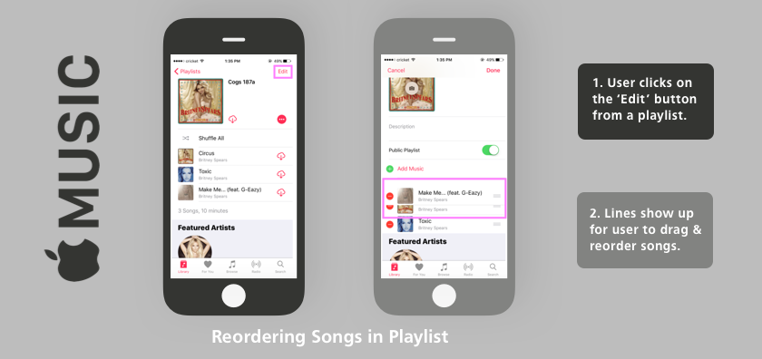
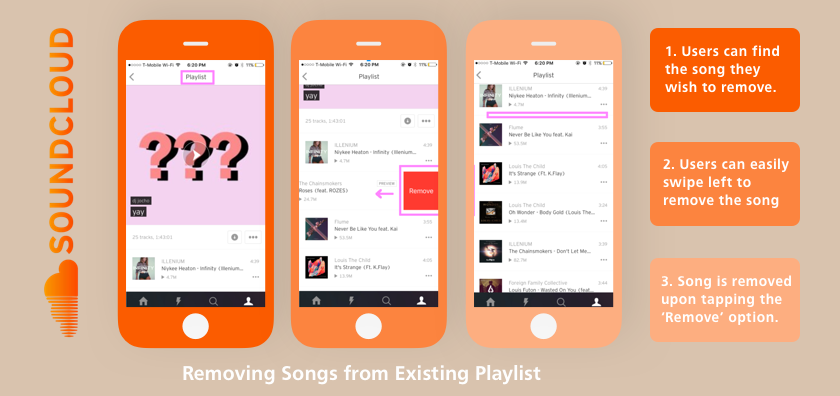
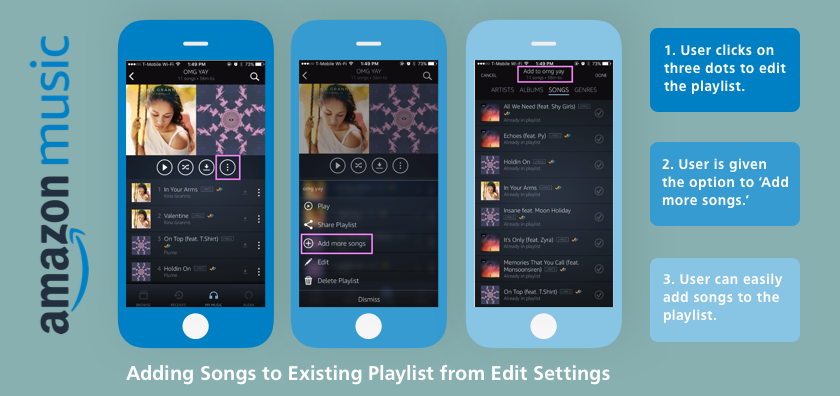
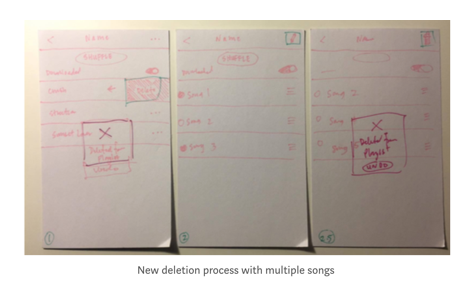
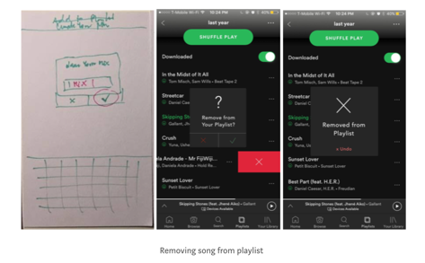
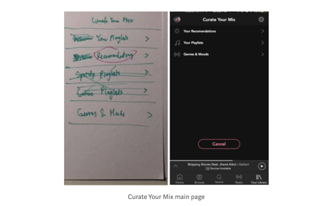
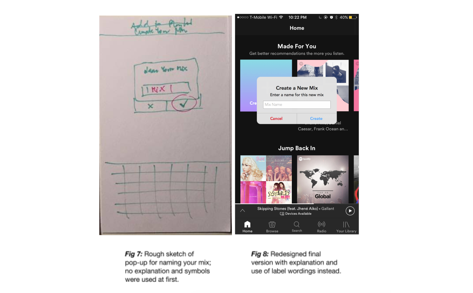

Process
Idea Map


1st Phase
☉ Strategize: Problem & Goals
After deciding which application to redesign, we identified common interests and ideas in reconstructing Spotify’s weaknesses. For instance, the current playlist management function lacks the heuristic principle of user control and freedom, such as deleting songs from and adding songs to a specific playlist. So, we proceeded to work on formulating interview questions and planned to build scenarios from the interviewees.

Current Design
❥ Empathize: User Research
Creating a careful user interview guideline is essential to implement efficiency and good user experience in any design. Individually, we conducted interviews to three users. Initially, they were asked their preferred music applications. Below are some of the questions we asked our users; some questions and tasks were carried out spontaneously throughout the interviewing process.
-
Interview Questions
- How long have you been using this music app?
- Do you use any other music apps other than this one? Which one and why ?
- Is your app updated to the latest version?
- When is the last time you made a playlist?
- What kind of playlists do you have?
- Why did you choose your preferred application? What do you like about this particular service. If they use other applications as well, what were some expectations and familiarities?
- Do you have any suggestions or improvements you recommend?
- What’s a feature that’s missing in your current music app that you wish existed in regards to making/managing playlists?
- Do you hear any new music app from friend/ or anywhere?
From this, we were able to discover intriguing findings, such as the fact that interviewees often do not pay attention to the extensive list of options, and rather, preferred to see clear choices in the form of large tiles (grid) that are seen in other parts of the application. A few even mentioned that they particularly liked the curated aspect of Spotify which made them use it more than other music applications that are often not as personalized (e.g. Soundcloud, Amazon Music). Based on those interviews, we created user scenarios based on 3 aspects: playlist creation, management, and other core activities within the mobile app.
CREATING
- ✦ Generic party playlist
- ✦ Playlist for friend
- ✦ Playlist of new releases
MANAGING
- ✦ Adding songs to existing playlist from EDIT
- ✦ Adding relevant holiday songs from Holiday Playlist
- ✦ Deleting songs frome existing playlist
OTHER
- ✦ Listening to playlist on shuffle
- ✦ Reordering songs in playlist
- ✦ Controlling where to queue a song
-
CREATING
- ✦ Generic party playlist
- ✦ Playlist for friend
- ✦ Playlist of new releases
-
MANAGING
- ✦ Adding songs to existing playlist from EDIT
- ✦ Adding relevant holiday songs from Holiday Playlist
- ✦ Deleting songs frome existing playlist
-
OTHER
- ✦ Listening to playlist on shuffle
- ✦ Reordering songs in playlist
- ✦ Controlling where to queue a song
2nd Phase
✐ Analyze: Competitive Analysis
Since developing user scenarios, our redesign drew on aspects that we found well-designed from other music applications that use playlists. We constructed these ideas from comparing different workflows from those scenarios within different applications, (i.e. matching the playlist workflows from Spotify to those of Apple Music, Soundcloud, and Amazon Music). Thus, we focused mainly on the flow of creating a playlist based on existing playlists.



Example of Good User Workflows
We also analyzed competitors' navigation structures and genre classifications. With a clearer understanding of how users can discover and navigate through different music streaming services, we found out that Spotify lacks the ability to combine mixes that were curated. Our aim to improve on personalization directed most of our new features towards manipulating playlists that were curated or could be curated to each user. As of the tedious deleting process, we justified that swiping left and presenting a confirmation pop-up will be more sufficient and convenient for users.
❂ Design: Wireframing
The process of sketching and wireframing was essential as we went through many phases of redeveloping our ideas and learning from the obstacles we faced. Since our prototype focused on building based on users' preferences, we wanted to make sure to emphasize user control and freedom by implementing undo, cancel, and/or back buttons on every page throughout the process of curating a playlist. Our first sketch in the figure below overlooked these user control factors, but we soon realized that users should always be able to fix their mistakes or change their minds, especially when it comes to creating a playlist based on users' interests and needs.



